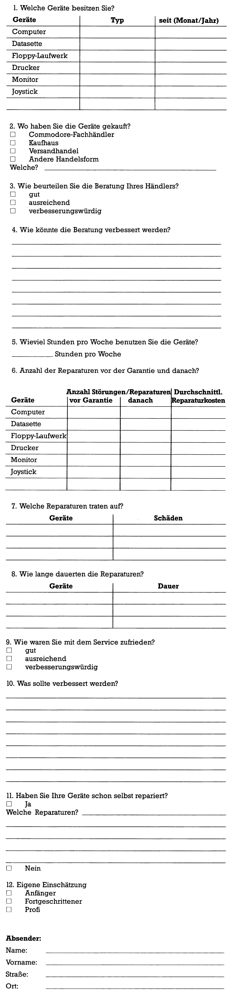

Reparaturerfahrungen gefragt
Mit diesem Fragebogen schneiden wir ein Thema an, das sicherlich alle Computerbesitzer interessieren dürfte. Es kann nämlich jeden Augenblick passieren, daß der Computer in die ewigen Jagdgründe der Chips eingeht. Dann ist guter Rat und gute Reparatur oft teuer und zeitraubend. Wir möchten wissen, welche Erfahrungen Sie mit einem defekten C 64, VC 20 oder Floppy-Laufwerk gemacht haben. Helfen Sie mit, durch Ihre Angaben von der Reparatursituation in Deutschland eine Art Bestandsaufnahme zu erstellen. Sind die Mängel bekannt, so können von der 64'er Redaktion in Zusammenarbeit mit den betroffenen Firmen Schritte zu deren Verbesserung unternommen werden.
Jeder der mitmacht, die Reparaturlandschaft zu verbessern, hat die Chance einen Preis zu gewinnen. Der erste Preis besteht in einem Commodore 128 Personal Computer, die Preise 2 bis 11 sind professionelle Programme von Commodore.
Die Gewinner werden aus den Einsendungen ausgelost.
Der Rechtsweg ist ausgeschlossen.
Einsendeschluß ist der 15. August 1985.
(aa) 